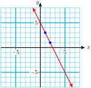
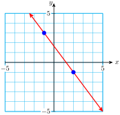
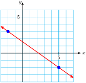
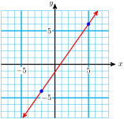
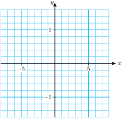

The slope of a line is the same, no matter which points we use to compute it. Therefore, if we know the slope of a line and any one point on the line, then all other points on the line must satisfy the slope formula:
Graph the line that passes through the point \((1,3)\) and has slope \(-2\text{.}\)
Find an equation for the line that passes through the point \((1,3)\) and has slope \(-2\text{.}\)
Solution.
We plot the point \((1,3)\text{,}\) then use the slope, \(-2\text{,}\) to find another point on the line. From the point \((1,3)\text{,}\) we move 2 units down and 1 unit to the right, arriving at \((2,1)\text{.}\) We draw the line through these two points. The graph is shown below.

We use the formula
\begin{equation*}
\dfrac{y-y_1}{x-x_1} = m
\end{equation*}
with \(\dfrac{\Delta y}{\Delta x}=\dfrac{-2}{1}\) and \((x_1,y_1)=(\alert{1},\alert{3})\) to get
They are really the same formula, but they are used for different purposes:
We use the slope formula to calculate the slope of a line when we know two points on the line. That is, we know \((x_1,y_1)\) and \((x_2,y_2)\text{,}\) and we are looking for \(m\text{.}\)
We use the point-slope formula to find the equation of a line. That is, we know \((x_1,y_1)\) and \(m\text{,}\) and we are looking for \(y=mx+b\text{.}\)
QuickCheck4.65.
Give two versions of the point-slope formula
Answer.
\(\dfrac{y-y_1}{x-x_1} = m~~\) and \(~~y-y_1 = m(x-x_1)\)
QuickCheck4.66.
What is the point-slope formula used for?
Answer.
To find the equation of a line
Example4.67.
Find an equation for the line that passes through the point \((1,4)\) and is perpendicular to the line \(4x-2y=6\text{.}\)
Solution.
We know one point on the required line, but we also need to know its slope. Now, our line is perpendicular to the given line, and the slope of the given line is \(~m_1=2~\) (as you can check by putting its equation into slope-intercept form). So the slope of our line is
Now we can use the point-slope formula with \(~m_1=\dfrac{-1}{2}\) and \((x_1,y_1) = (1,4)\text{.}\)
\begin{align*}
y-y_1 \amp = m(x-x_1) \\
y-\alert{4}\amp = \alert{\dfrac{-1}{2}}(x-\alert{1}) \amp\amp \blert{\text{Apply the distributive law.}}\\
y - 4 \amp = \dfrac{-1}{2}x + \dfrac{1}{2} \amp\amp \blert{\text{Add 4 to both sides.}}\\
y \amp = -\dfrac{-1}{2}x + \dfrac{9}{2} \amp\amp \blert{\dfrac{1}{2}+4=\dfrac{1}{2}+\dfrac{8}{2}= \dfrac{9}{2}}
\end{align*}
The given line and the perpendicular line are shown in the figure below.
Caution4.68.
If we happen to know the \(y\)-intercept of a line, we can write its equation using the slope-intercept formula, \(y=mx+b\text{.}\) But if we dont know the \(y\)-intercept and instead know a different point, it is easier to use the point-slope formula.
SubsectionThe Line Through Two Points
How many lines pass through two given points? There is only one. We can use the point-slope formula to can find its equation.
Example4.69.
Find an equation for the line that passes through \((2,-1)\) and \((-1,3)\text{.}\)
Solution.
We solve this problem in two steps: First, we find the slope of the line, and then we use the point-slope formula.
Step 1 Let \((x_1,y_1) = (2,-1)\) and \((x_2,y_2) = (-1,3)\text{.}\) Using the slope formula, we find
Step 2 We apply the point-slope formula with \(m=\dfrac{-4}{3}\) and \((x_1,y_1) = (2,-1)\text{.}\) (We can use either point to find the equation of the line.) Then
The graph of the line is shown in the figure below.

QuickCheck4.70.
How many different lines pass through two given points?
Answer.
One
QuickCheck4.71.
What formula do we use to find the equation of a line through two points?
Answer.
Point-slope formula
To Fit a Line through Two Points.
Compute the slope between the two points.
Substitute the slope and either point into the point-slope formula.
SubsectionApplications
Variables that increase or decrease at a constant rate can be described by linear equations.
Example4.72.
In 1993, Americans drank 188.6 million cases of wine. Wine consumption increased at a constant rate over the next decade, and in 2003 we drank 258.3 million cases of wine. (Source: LA Times, Adams Beverage Group)
Find a formula for wine consumption, \(W\text{,}\) in millions of cases, \(t\) years after 1990.
State the slope as a rate of change. What does the slope tell us about this problem?
Solution.
We have two data points of the form \((t,W)\text{,}\) namely \((t_1,W_1)=(3,188.6)\) and \((t_2,W_2)=(13,258.3)\text{.}\) We use the point slope formula to fit a line through these two points. First we compute the slope.
Graph the line of slope \(\dfrac{-1}{2}\) that passes through the point \((-3,2)\text{.}\)
\(\displaystyle \blert{\text{Plot the point}~~(-3,2).}\)
\(\displaystyle \blert{\text{Use the slope to find a second point:} ~~~m =\dfrac{\Delta y}{\Delta x} = \dfrac{-1}{2}}\)
\(\displaystyle \blert{\text{Use the slope to find a third point:} ~~~m =\dfrac{\Delta y}{\Delta x} = \dfrac{1}{-2}}\)
Find an equation for the line.
\(\displaystyle \blert{\text{Use the point-slope formula}~\dfrac{y-y_1}{x-x_1} = m.}\)
\(\displaystyle \blert{\text{Cross-multiply to simplify the equation.}}\)
\(\displaystyle \blert{\text{Solve for} ~y.} \)
Graph the line of slope 3 that passes through the point \((-4,-6)\text{.}\)
\(\displaystyle \blert{\text{Plot the point}~~(-4,-6).}\)
\(\displaystyle \blert{\text{Use the slope to find a second point:} ~~~m =\dfrac{\Delta y}{\Delta x} = \dfrac{3}{1}}\)
\(\displaystyle \blert{\text{Use the slope to find a third point:} ~~~m =\dfrac{\Delta y}{\Delta x} = \dfrac{-3}{-1}}\)
Find an equation for the line.
\(\displaystyle \blert{\text{Use the point-slope formula}~\dfrac{y-y_1}{x-x_1} = m.}\)
\(\displaystyle \blert{\text{Cross-multiply to simplify the equation.}}\)
\(\displaystyle \blert{\text{Solve for} ~y.} \)
Activity4.18.Using the Point-Slope Formula.
Find an equation for the line that passes through \(-1,4)\) and \((3,-2)\text{.}\)
\(\displaystyle \blert{\text{Compute the slope of the line.}}\)
\(\displaystyle \blert{\text{Apply the point-slope formula.}}\)
Around 1950, people began cutting down the worlds rain forests to clear land for agriculture. In 1970 there were about 9.8 million square kilometers of rain forest left, and in 1990 there were about 8.2 million square kilometers.
Use these data points to find a linear equation for the number of million square kilometers, \(y\text{,}\) of rain forest left \(x\) years after 1950.
\(\displaystyle \blert{\text{Data points:}}\)
\(\displaystyle \blert{\text{Compute the slope:}}\)
\(\displaystyle \blert{\text{Apply the point-slope formula.}} \)
If we continue to clear the rain forest at the same rate, when will it be completely destroyed?
What is the slope of a line that is parallel to \(~x+4y=2\text{?}\)
Find an equation for the line that is parallel to \(~x+4y=2~\) and passes through \((2,3)\text{.}\)
What is the slope of a line that is perpendicular to \(~x+4y=2\text{?}\)
Find an equation for the line that is perpendicular to \(~x+4y=2~\) and passes through \((2,3)\text{.}\)
SubsubsectionWrap-Up
Objectives.
In this Lesson we practiced the following skills:
Using the point-slope formula to find the equation of a line
Using the point-slope formula to graph a line
Using the point-slope formula in applications
Questions.
In graphing the line in Activity 1, explain how the 2 in the point \((-3,2)\) and the 2 in the slope \(\dfrac{-1}{2}\) are used differently.
In Problem 2 of Activity 2, what were the two data points?
What was different in the solutions of Problems 2 and 3 of Activity 2?
Activity4.19.Homework Preview.
Graph the line.
Find the equation of the line.
\(m=-3;~~~(-6,8)\)
Graph the line.
Find the equation of the line.
\(m=\dfrac{2}{5};~~~(7,4)\)
Find an equation of the line that goes through \((-6,-4)\) and \((2,8)\text{.}\)
Find an equation of the line that is perpendicular to \(~3x-5y=1~\) and passes through \((0,4)\text{.}\)
Answers to Homework Preview
\(\displaystyle y=-3x-10\)
\(\displaystyle y=\dfrac{2}{5}x + \dfrac{6}{5}\)
\(\displaystyle y=\dfrac{3}{2}x+5\)
\(\displaystyle y=\dfrac{-5}{3}x+4\)
ExercisesHomework 4.5
Exercise Group.
For Problems 16,
Use the point-slope method to graph the line with the given slope and passing through the given point.
Find an equation for the line. Write your equation in slope-intercept form.
Find the \(x\)-intercept of the line.
1.
\(m=-2,~~(-3,4)\)
2.
\(m=\dfrac{1}{2},~~(4,-3)\)
3.
\(m=\dfrac{-2}{3},~~(-6,2)\)
4.
\(m=0,~~(-3,5)\)
5.
\(m=\dfrac{-5}{2},~~(6,-10)\)
6.
\(m=3,~~(1,-1)\)
Exercise Group.
For Problems 79, without doing any calculations, give the slope of each line and the coordinates of one point on the line.
7.
\(y=\dfrac{3}{5}-7\)
8.
\(y-2=3(x+5)\)
9.
\(y=\dfrac{4}{5}x\)
Exercise Group.
For Problems 1012, find an equation for the line passing through the given points. Write your answer in slope-intercept form.
10.
\((-2,4),~(1,7)\)
11.
\((3,5),~(-3,-5)\)
12.
\((6,4),~(-2,5)\)
Exercise Group.
For Problems 1316, find the equation of the line shown in the graph.
13.

14.
15.
16.

17.
Put the equation \(2y-3x=5\) into slope-intercept form, and graph the equation.

What is the slope of any line that is parallel to \(2y-3x=5\text{?}\)
On your graph for part (a), sketch by hand a line that is parallel to \(2y-3x=5\) and passes through the point \((4,2)\text{.}\)
Use the point-slope formula to write an equation for the line that is parallel to the graph of \(2y-3x=5\) and passes through the point \((4,2)\text{.}\)
18.
Put the equation \(x-2y=5\) into slope-intercept form, and graph the equation.
What is the slope of any line that is perpendicular to \(x-2y=5\text{?}\)
On your graph for part (a), sketch by hand a line that is perpendicular to \(x-2y=5\) and passes through the point \((4,-3)\text{.}\)
Use the point-slope formula to write an equation for the line that is perpendicular to the graph of \(x-2y=5\) and passes through the point \((4,-3)\text{.}\)
19.
What is the slope of the line \(y=2x+1\text{?}\)
What is the slope of a line parallel to \(y=2x+1\text{?}\)
A line is parallel to \(y=2x+1\) and passes through \((-2,1)\text{.}\) What is its equation?
20.
What is the slope of the line \(y=-3x-2\text{?}\)
What is the slope of a line parallel to \(y=-3x-2\text{?}\)
A line is parallel to \(y=-3x-2\) and passes through \((1,3)\text{.}\) What is its equation?
Exercise Group.
For Problems 2124, well find a linear model from two data points.
Make a table showing the coordinates of two data points for the model.
Find a linear equation in slope-intercept form relating the variables.
Use your equation to answer the questions.
21.
Francine is driving into the mountains and stopping periodically to record the temperature, \(T\text{,}\) at various altitudes, \(h\text{.}\) The temperature at an altitude of 3200 feet is \(77 \degree\text{,}\) and the temperature at 8000 feet is \(65 \degree\text{.}\)
What is the slope, including units? What does it tell you about the problem?
What will the temperature be at 10,000 feet?
What was the temperature at sea level?
22.
Envirotech is marketing a new line of microwave clothes dryers. It cost them $45,000 to produce the first 100 dryers. When they had produced 180 dryers, their total cost was up to $61,000. They would like to know the total cost, \(C\text{,}\) of producing \(x\) dryers.
What is the slope, including units? What does it tell you about the problem?
Envirotech has budgeted $100,000 for microwave clothes dryers this year. How many can they produce?
How much did Envirotech invest in development before they made the first dryer?
23.
Flying lessons cost $645 for an 8-hour course and $1425 for a 20-hour course. Both prices include a fixed insurance fee. Express the cost, \(C\text{,}\) of flying lessons in terms of the length, \(h\text{,}\) of the course in hours.
What is the slope, including units? What does it tell you about the problem?
How much does a 10-hour course cost?
How much is the fixed insurance fee?
24.
On an international flight a passenger may check two bags each weighing 70 kilograms, or 154 pounds, and one carryon bag weighing 50 kilograms, or 110 pounds. Express the weight, \(p\text{,}\) of a bag in pounds in terms of its weight, \(k\text{,}\) in kilograms.
What is the slope, including units? What does it tell you about the problem?
What does a 50-pound bag weigh in kilograms?
Why is the constant term in your equation equal to zero?